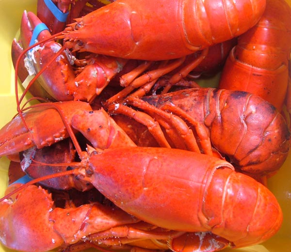

-
Tôm Biển Đà Nẵng
Đà Nẵng có thể coi là điểm hội tụ của các món ngon ba miền Bắc - Trung - Nam. Với các món ăn đặc sản phong phú về chủng loại và đa dạng về mùi vị, thật sự hấp dẫn du khách khắp nơi.
Các món ăn dân dã luôn phù hợp khẩu vị của người Quảng. Những món ăn Đà Nẵng bao giờ cũng đủ vị chua, cay, mặn, ngọt như đầy đủ sắc thái của cuộc sống.
Ngoài mì Quảng, thịt heo cuốn bánh tráng và bò tái Cầu Mống là những đặc sản dân dã mà ai đã đến Đà Nẵng không thể không thử qua, Đà Nẵng còn được thiên nhiên ưu đãi với một bờ biển dài tuyệt đẹp và những sản vật mà biển mang lại cho cho vùng đất này đã làm nên những món ngon Đà Nẵng. Đến Đà Nẵng không thể bỏ qua những món như gỏi cá, mít non kho cá chuồn, nộm sứa, nước mắm Nam Ô... đã được những bàn tay khéo léo của người dân miệt biển chế biến thành những đặc sản. Món ăn biển nơi đây có rất nhiều, hầu như không thiếu món gì từ lẩu sống, tôm nướng, tôm xóc tỏi, cua hấp, cua rang me, bào ngư nướng, ghẹ hấp đến những món quý hiếm như tôm hùm sống, hải sâm... Giá cả thì nhà hàng quy mô càng lớn, phục vụ càng chu đáo thì giá càng cao.
Đặc biệt là các món chế biến từ “tôm biển” được ưa chuộng hơn cả bởi sự hấp dẫn của hương vị thịt tôm tự nhiên và sự bổ dưỡng mà món ăn mang đến cho người thưởng thức. Tôm ở đây có đủ các thể loại: nhỏ có, to có, tôm bạc, tôm rằn, tôm hùm…xứng tầm là món ngon Đà Nẵng.
Các món tôm ở đây với từng thớ thịt săn chắc, giòn ngọt, đều giữ được hương vị đặc trưng của biển một cách nguyên vẹn nhất. Bên cạnh đó rất đa dạng và phong phú về cách chế biến, du khách sẽ được thưởng thức vị ngọt đầm đà của tôm và hương thơm lừng của tỏi trong món “tôm hấp tỏi” hay vị thơm nồng giòn, mặn của món “tôm đất rang muối”, hoặc thưởng thức vị chua cay, nóng hổi của món “lẫu tôm”. Giờ đây món đặc sản tôm bình dân đã trở thành đặc sản Đà Nẵng mang phong vị riêng không thể thiếu trong danh mục ẩm thực đất Việt.
